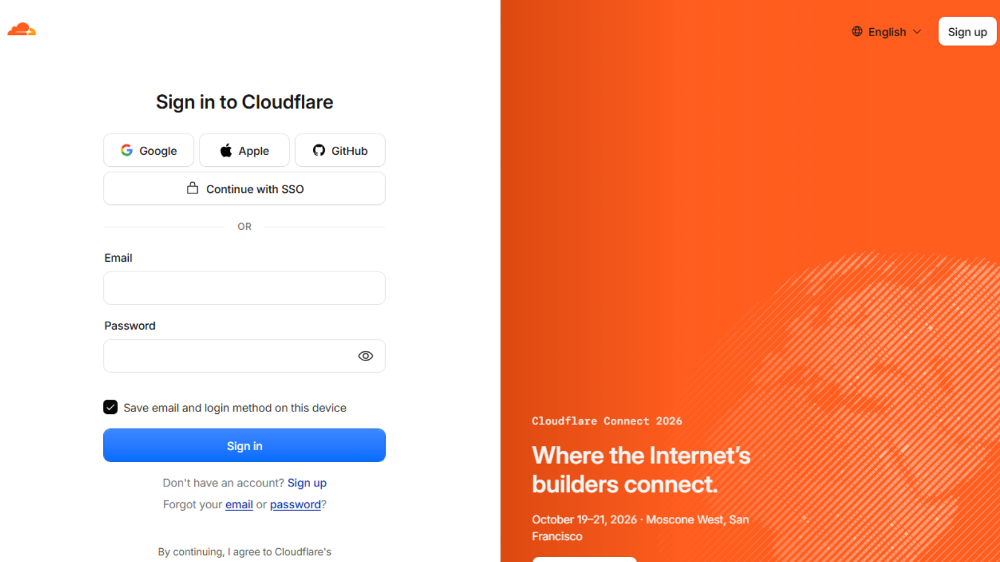
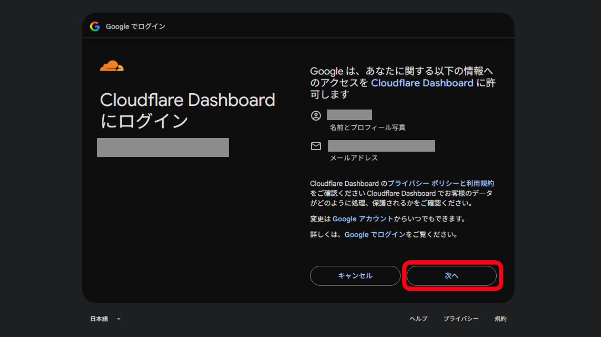
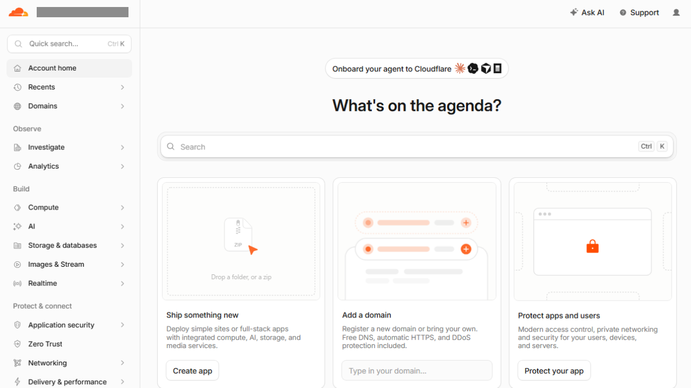
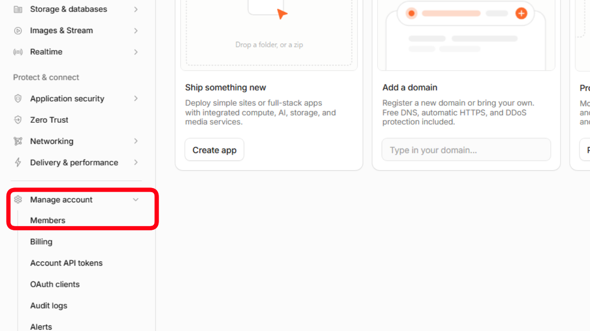
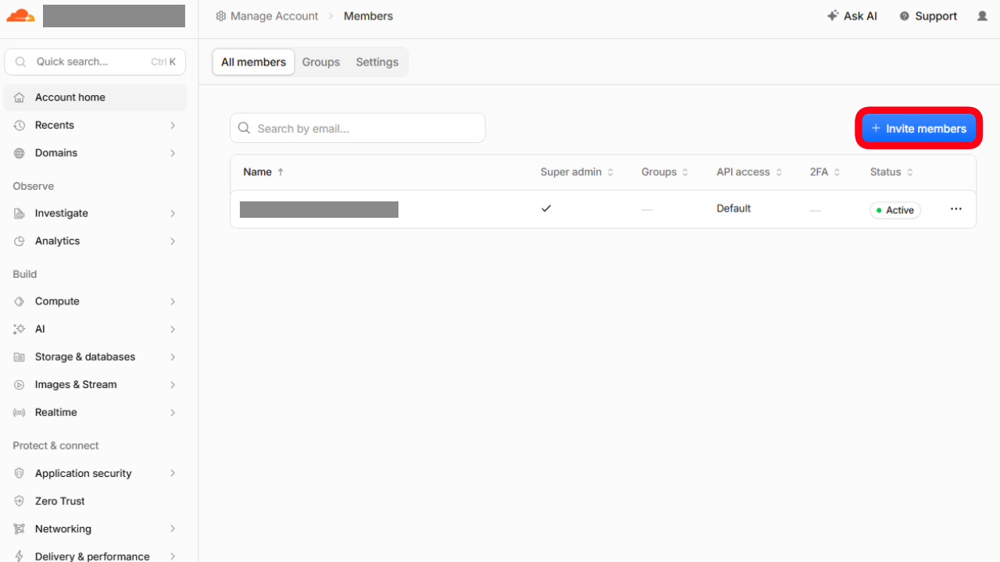
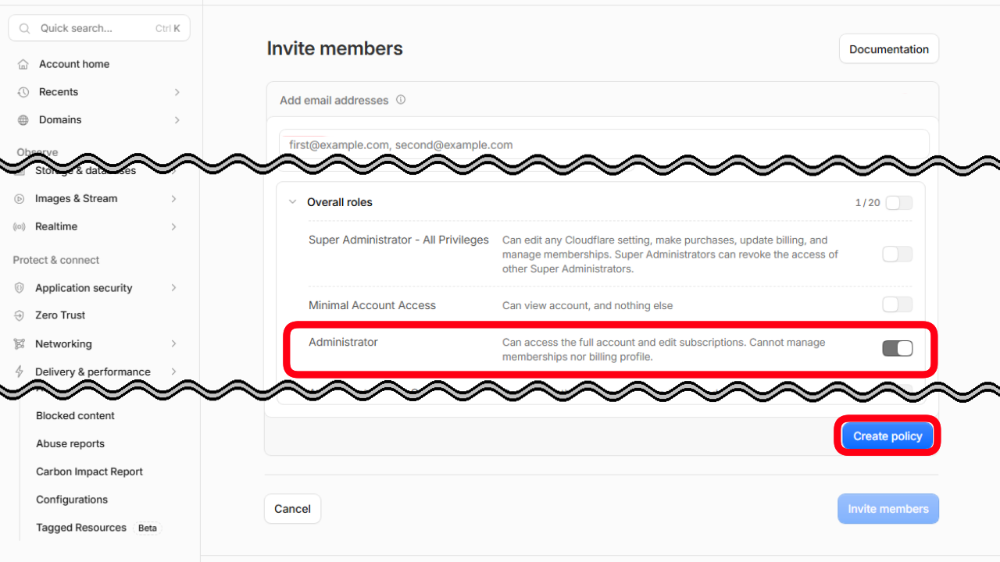
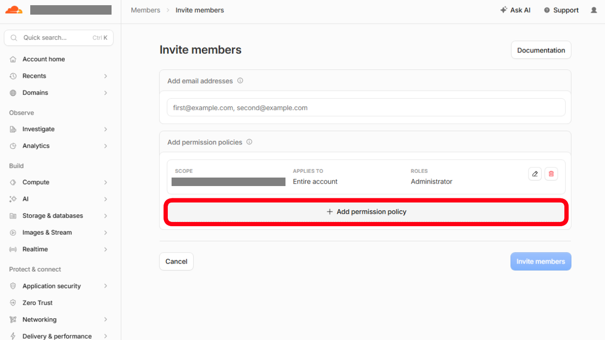
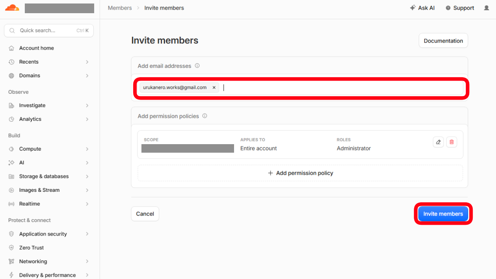
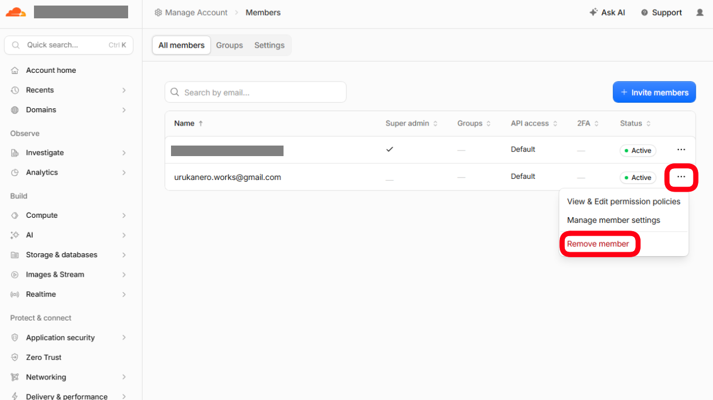

インフラ・ホスティング
1. Cloudflare
① アカウント作成手順
- Cloudflare 登録ページ を開きます。
- Continue with Google を選択し、サインアップするGoogleアカウントを選択します。
- Googleでログイン の次へを選択します。
- 下記のダッシュボード画面が表示されれば登録完了です。



② 作業アカウントの招待と権限設定（Administrator）
- Cloudflare ダッシュボード にログインします。
- 左側メニューの 「管理（Manage Account）」 → 「メンバー（Members）」 を開きます。
- 「メンバーを招待（Invite members）」 をクリックします。
- ロール（Overall roles）の選択で 「管理者（Administrator）」 を選択します。
- 画面を一番下までスクロールし、「Create policy」 をクリックします。
- + Add permission policy をクリックします。
- Add email addresses に作業者のメールアドレスを入力します。
- ロール（Overall roles）の選択で 「管理者（Administrator）」 を選択します。
※作業者がPagesの新規デプロイ、Workers・D1データベースの作成をゼロから代行できるようにするため、必ず「Administrator」を指定してください。（クレジットカード情報やプラン変更権限は所有者にしか無いため、勝手に課金される心配はありません）
- 画面を一番下までスクロールし、「Invite members」 をクリックします。




招待アドレス：urukanero.works@gmail.com
※招待完了後、ご連絡いただけると幸いです。

【納品・作業完了後】作業アカウントの削除手順
- ダッシュボード左側メニュー 「管理（Manage Account）」 → 「メンバー（Members）」 を開きます。
- メンバー一覧から作業者のメールアドレスを探し、右端にある 「･･･」 をクリックします。
- 「Remove member」 をクリックして確認モーダルで承認すると、作業者のアクセス権が即座に解除されます。
